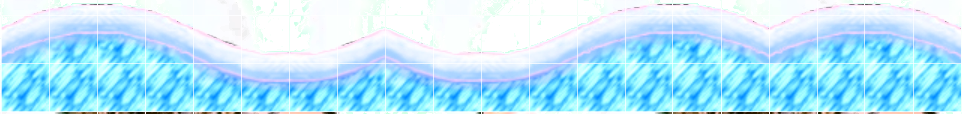

SuperTux Level Guidelines
As someone who plays and has to complete in a short amount of time SuperTux levels that are always of varying quality and difficulty, I guess that I must know what makes a level fun and what ruins it. I do not make levels myself; I stopped a long time ago making very poor levels indeed, that would break my own suggestions today. I should not criticise how levels are made, not knowing the full extent of the difficulty in making these levels. However, most who create levels do want their creations to be fun to play. A level can be both challenging and fun, or easy and fun. But without any advice from a player who has not created these levels getting difficulty right is very difficult. So, to help, I thought that I would compile what to avoid doing when creating new levels in order to make them fun. If I'm wrong with any of this, tell me at brmbrmcar.1.4913@gmail.com.
General guidelines
- At any stage in the level before the finish one should be able to return to any point previously in the level.
- All coins and secrets should be accessible without killing of badguys and with small Tux, and the level should be able to be finished with no badguy kills.
- All badguys should be killable using items aquirable in the level assuming start with small Tux (killing with bombs/iceblocks does not count).
What to avoid using
Zeeklings
I have always hated zeeklings since I started playing 0.3 SuperTux. They are incredibly inconsistent, and until you start playing levels which have them do you realise how annoying they can be. Some would criticise me suggesting avoidance of their usage altogether, but at least the current way they work it is almost impossible to use them without causing someone to rage. At least until they get improved.
Ice
This also may be very controversial, but in every case I have seen it used it has turned a fun level into a complete nightmare. I don't know how the code could fix this.
Foreground/background not contrasting
This may be more of an obvious one, but I have seen quite a lot of times stalactites in front of a background that makes them impossible to tell apart, to give one example. Even if it looks more than clear on your screen, many factors may make it difficult to see, especially when unexpected.
Badguys falling from unexpected places
This also should be quite clear as to why this is here, but I still see it quite a lot. 
Airflowers
Although I don't ever recall problems simply because someone put an airflower in a level, they really aren't ready to be used yet.
Slow deaths
If you fall in a pit and you cannot get up it is incredibly annoying. If you can't get out you should die an instant death.
What to be careful with
Invisible blocks
For secrets invisible blocks can be very useful. However, they can become very annoying. To get the best out of these blocks, place them out of the way of badguys of jumps. Anyone who has played 0.3.4 will remember this infamous example: 
Crumbling paths
This comes down to the idea of being able to go back at any stage. Paths that go after a few deciseconds should only be used as an extra hand, not a neccesity to get coins or even past something.
Curved snow paths
These can be a very good feature, however right now the code for badguys on them isn't great, meaning it can be hard to tell the speed of a badguy or when one will go back the opposite direction. It can make the level a lot more annoying. Just be careful. 
Narrow paths
Some would say to get rid of narrow paths (less than 4 tiles high) altogether. I would say that they should only be used in areas with no badguys or jumps, such as for a secret or if a bonus is above.